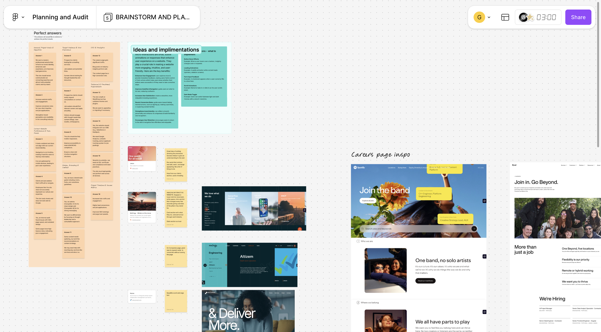
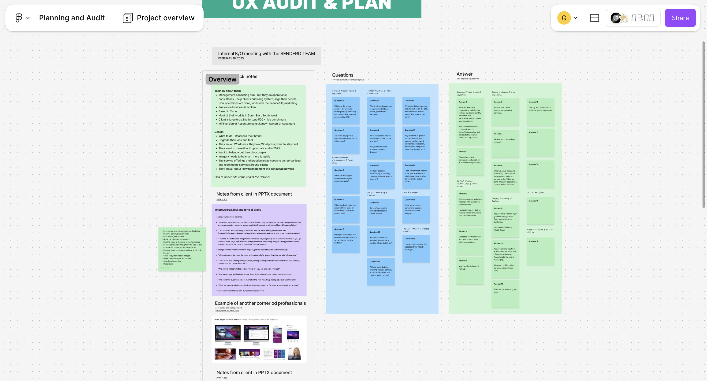
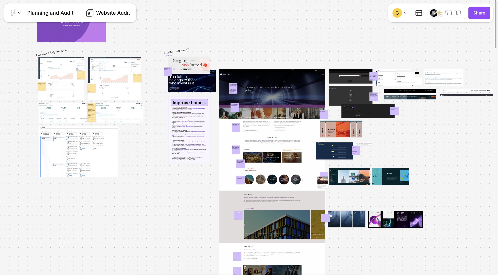
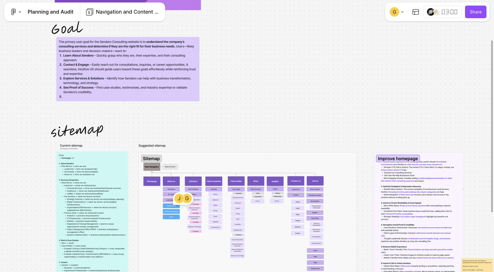
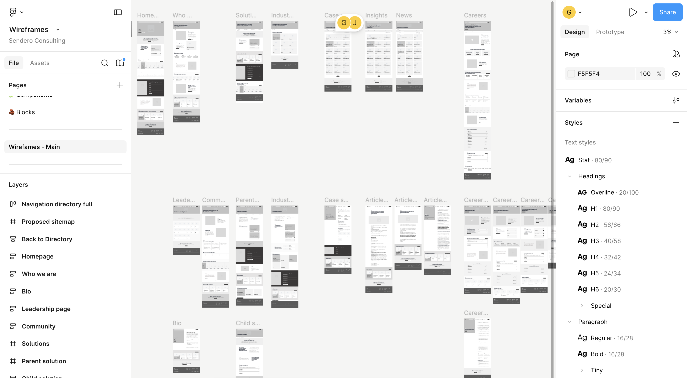
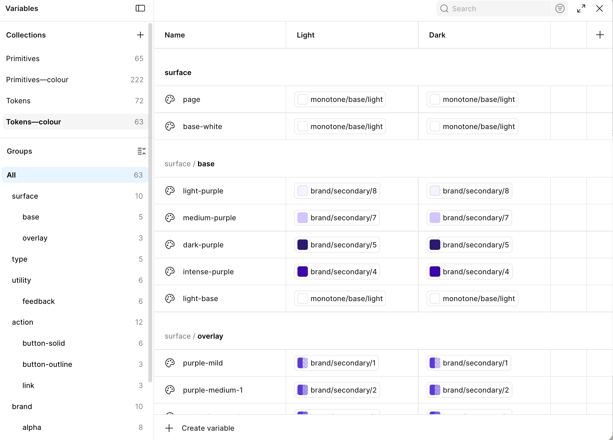
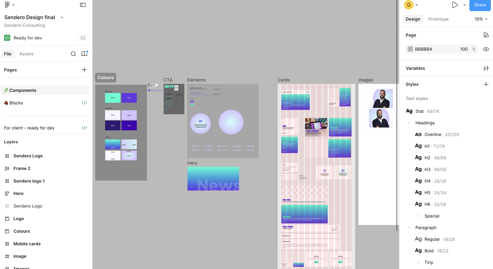
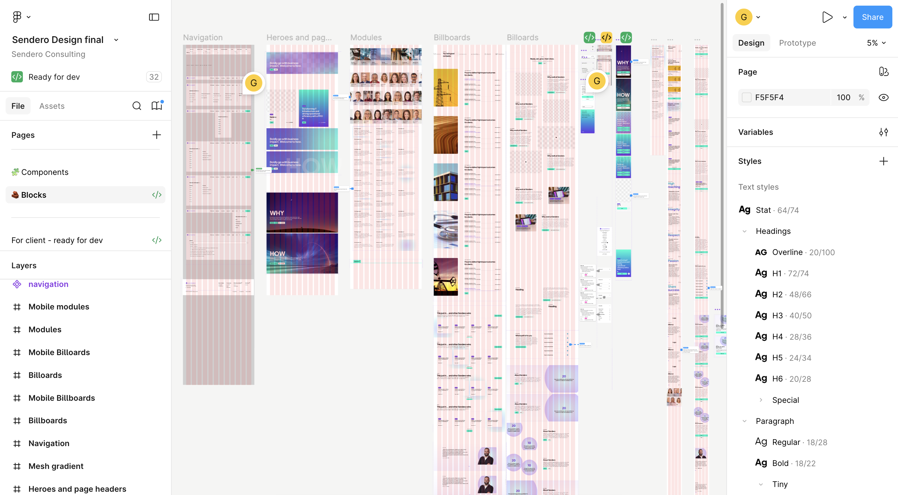
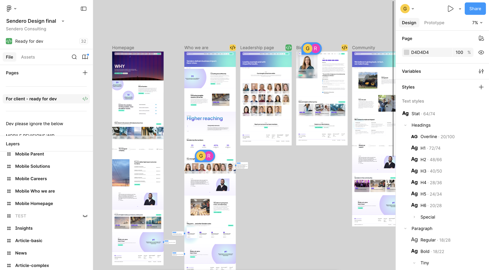

Sendero
Strategy. Rebranded.
A full rebrand and UX redesign for a consulting firm. I used AI to speed up the research and audit, then worked closely with the client team to make sure the final design actually reflected who they are.
Matching digital presence to expertise.
Sendero's existing site wasn't doing justice to the quality of their work. They needed a proper redesign, new brand identity, refreshed visual language, and a user experience that actually made sense.
I used AI to get through the research and audit quickly, which meant more time for the stuff that really matters, talking to stakeholders, understanding the business, and making good design decisions. The site launched with strong KPIs and has been well received.
How it was built.
AI Research & Audit
I used AI to dig into the existing site and quickly surface what wasn't working, UX friction, content gaps and missed opportunities. From there I put together a clear audit that shaped everything that came next.
Stakeholder Collaboration
I ran workshops with the Sendero team to get aligned on brand direction, tone, and what success actually looks like for them. Good design starts with good conversations.
Rebrand & Design
With a clear direction locked in, I started building a new visual identity, colour system, type choices, and a full component library. Every decision was tied back to the audit and the client brief.
Accessibility First
Accessibility wasn't an afterthought. I built WCAG compliance into the design from the start, proper contrast ratios, keyboard navigation, ARIA labels, and screen reader support all checked throughout.
Inside the project.
A look at the actual files — ideation, audit, stakeholder sessions, sitemap, wireframes, design system, and final screens.

Ideation & Planning
Phase 1Ideas, implementations, and strategic direction mapped before the project kicked off.

Stakeholder Sessions
Phase 2Internal K/O meeting notes, client brief, Q&A, and project overview documented in full.

Website Audit
AI-AssistedAnalytics data, page-by-page audit, competitor review, and improvement recommendations.

Sitemap & Content Mapping
Phase 3Current vs proposed sitemap — full navigation architecture and content goals per page.

Wireframes
FigmaFull site wireframed in Figma — all pages including Home, Who We Are, Solutions, Insights, and Careers.

Design Variables
63 TokensComplete token system — Primitives, Tokens-colour, surface, action, brand, and alpha collections.

Component Library
Full SystemColours, CTA elements, cards, heroes, images — all built as reusable components ready for dev.

Block Library
32 BlocksNavigation, heroes, modules, billboards — all blocks built for desktop and mobile, ready for dev.

Final Design Screens
Ready for DevAll pages designed and marked ready for dev — Homepage, Who We Are, Leadership, Bio, Community, and more.
Strong KPIs post-launch.
The new site landed well. Engagement metrics improved, the client was happy with how the brand came across, and it's fully accessible.
Work file confidential. Available for full walkthrough on request.